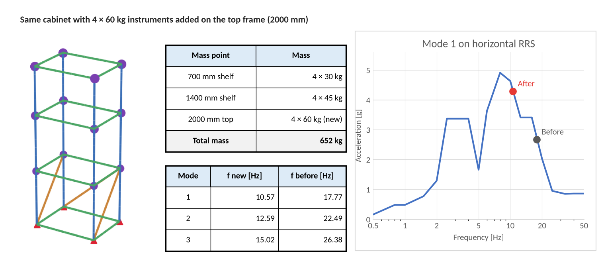

여기서
N
node
: Node 수(NBLOCK의 행 수)
N
elem
: Element 수(EBLOCK의 최대 번호)
NBLOCK, EBLOCK : .dat 파일의 Node·Element 구간
/solu … /wb, file, end : 지우는 해석 명령 구간
CMBLOCK, BCS : 남겨 두는 Component·경계조건 구간
지진해석 코드를 자동으로 만들려면, 우선 Workbench에서 내보낸 모델(.dat)의 구조를 알아야 합니다.
프로그램은 Node와 Element 수를 읽고, 기존 해석 명령이 들어 있는 구간은 지웁니다.
이렇게 해야 새로 작성하는 Modal·Spectrum 명령과 충돌하지 않습니다.
여기서
K, M : 강성행렬과 질량행렬
ω
i
: i번째 모드의 고유 각진동수 [rad/s]
φ
i
: i번째 모드 형상
f
i
: i번째 모드의 고유진동수 [Hz]
Γi
: i번째 모드의 Participation Factor
r : 가진 방향의 영향 벡터
m
eff,i
: i번째 모드의 유효질량
M
total
: 모델 전체 질량
Response Spectrum 해석은 구조물의 고유진동수와 모드 형상을 바탕으로 하기 때문에, 우선 Modal 해석이 필요합니다.
Modal 해석은 강성행렬과 질량행렬로 이루어진 고유치 문제를 풀고, Participation Factor는 각 모드가 각 방향 지진에 얼마나 반응하는지 알려 줍니다.
그래서 어떤 모드가 지진 응답을 지배하는지가 이 단계에서 정해집니다.
여기서
S
a
(f
i
) : RRS에서 읽은 fi
의 Spectrum 가속도
ζ : 감쇠비(3 %)
q
i
: i번째 모드의 응답
Γi
, ω
i
: i번째 모드의 Participation Factor와 각진동수
R
i
: i번째 모드의 응답값
R
ZPA
: ZPA에서의 잔여 강체 응답
R : 조합 응답(SRSS)
각 모드의 최대 응답은 그 모드 진동수에서 읽은 Spectrum 가속도에 Participation Factor를 곱해서 구합니다.
하지만 모드별 최대값은 동시에 생기지 않기 때문에 그대로 더하지 않고, SRSS 같은 모드 조합 방법을 씁니다.
원자력 기기에서는 RG 1.92에 따라 진동수가 가까운 모드의 영향도 함께 고려합니다.
여기서
R
X
, R
Y
, R
Z
: X, Y, Z 방향 가진에 대한 응답
R
XYZ
: 세 방향 조합 응답
SetX, Y, Z
: 방향별 결과 세트 번호
SetSRSS
: SRSS 조합 결과 세트 번호
n
Mode
: 추출한 모드 수
지진은 X, Y, Z 세 방향에서 동시에 작용하기 때문에, 방향별 결과를 하나로 조합해야 합니다.
프로그램은 세 방향 결과를 SRSS로 조합하는 명령을 만들고, 결과 세트 번호를 정해서 응력과 반력을 바로 확인할 수 있게 합니다.
이렇게 조합한 결과가 설계 검토에 쓰는 최종 응답이 됩니다.
이번 예제에서는 같은 강재 캐비닛의 상부 프레임(2000 mm)에 60 kg 계측기 4대를 추가하고, 수평·수직 RRS(Damping 3 %, 0.5~50 Hz)로 다시 해석합니다.
프로그램은 Element 244개로 바뀐 모델을 읽고, 같은 Modal·Spectrum 코드를 작성합니다.
1차 모드는 17.77 Hz에서 10.57 Hz로 내려가서 수평 RRS의 8~10 Hz Peak에 가까워지고, Spectrum 가속도는 2.67 g에서 4.29 g로 커집니다.
700 mm 선반 보의 SRSS 조합 응력은 241.5 MPa로 허용응력 211.5 MPa를 넘습니다(비 1.14).
한마디로, 프레임을 보강하거나 상부 계측기 위치를 바꿔야 한다는 뜻입니다.
예제의 진동수와 응력은 생성된 APDL 절차를 따르는 같은 캐비닛의 Python 보 모델에서 구한 값입니다.

 APDL 지진해석 페이지로 돌아가기
APDL 지진해석 페이지로 돌아가기